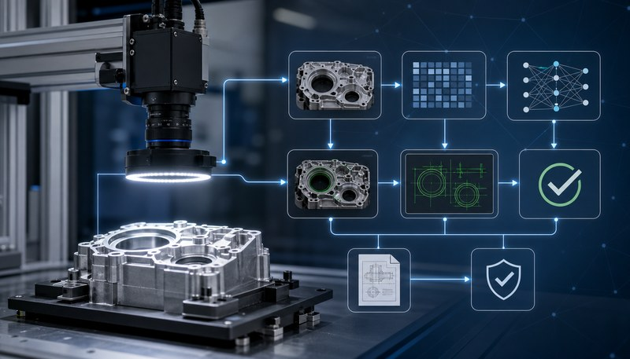
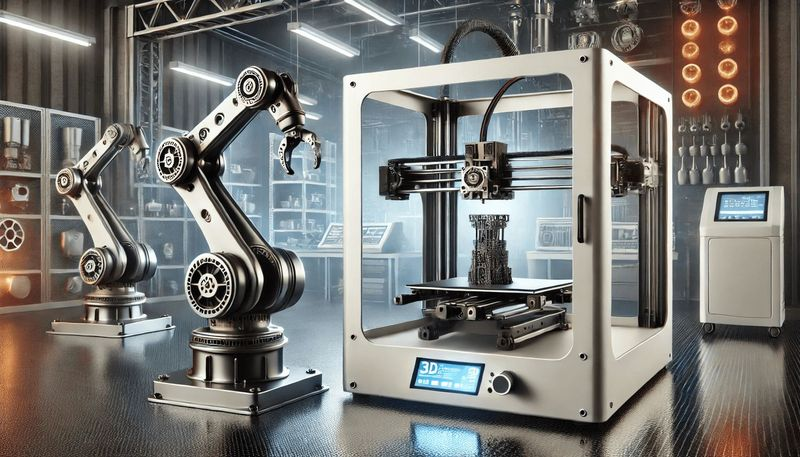

Wissen aus Praxis und Studium
Insights
Fachbeiträge und persönliche Erfahrungen zu industrieller Bildverarbeitung, Knowledge Graphs, Mechatronik, Robotik, MATLAB und Simulink sowie verständlicher Wissensvermittlung.
Alle Beiträge stammen von Sara Hofmann und greifen Themen auf, mit denen sie sich in Studium, technischer Projektarbeit, Lehre oder Nachhilfe praktisch beschäftigt.

Knowledge Graphs in der industriellen Bildverarbeitung

3D-Druck in der Robotik: Praktische Anwendungen im Alltag
Warum interdisziplinäres Denken die Zukunft der Technik ist

Effektive Nachhilfe: Mehr als nur Hausaufgabenhilfe

Beruf & Studium: Wie ich Balance finde